A closer look at the work
Still frames from the project interface tours. Clinical names and records are fictional demonstration data. Website content comes from the repositories. These previews show interfaces; they are not evidence of a production deployment or an end-to-end backend test.
OdontoCare
01 / Meet the patient
Records and clinical context, together.
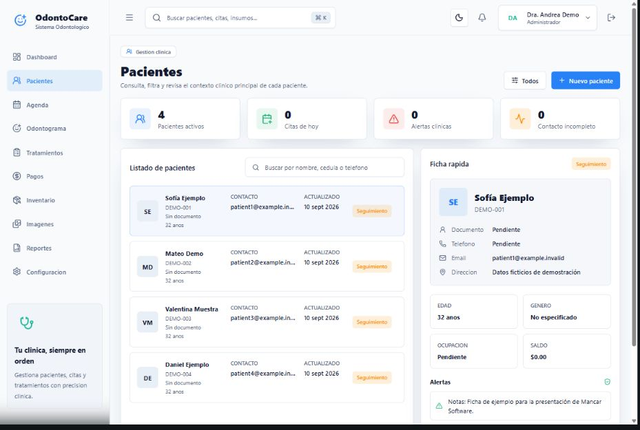
02 / Review the history
A history that stays with the patient.
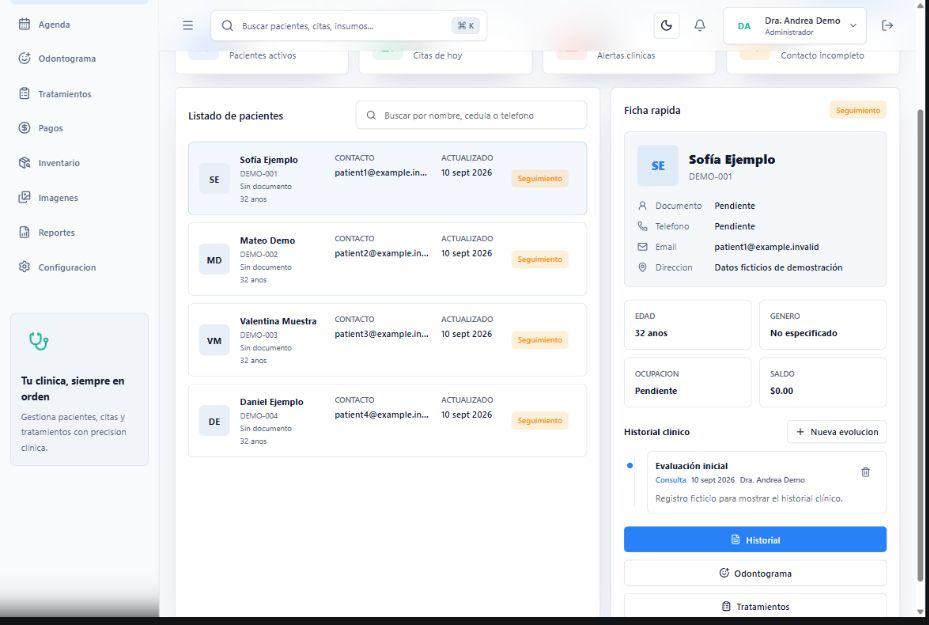
03 / Plan the next visit
Appointments in a clear daily view.
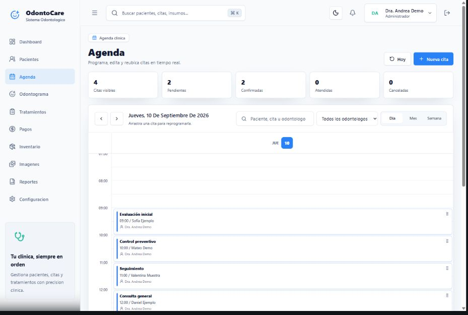
VetCare Pro
01 / Find the patient
Patients and their owners, connected.
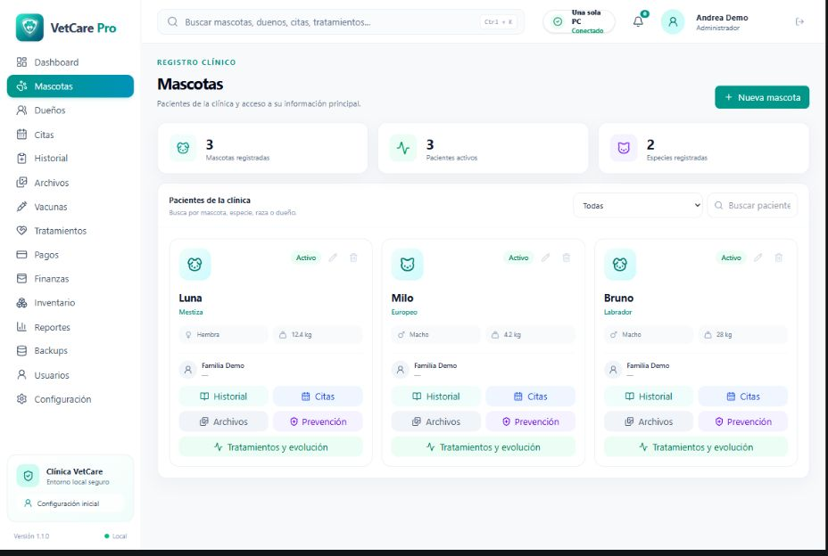
02 / Follow the history
Clinical context across each visit.
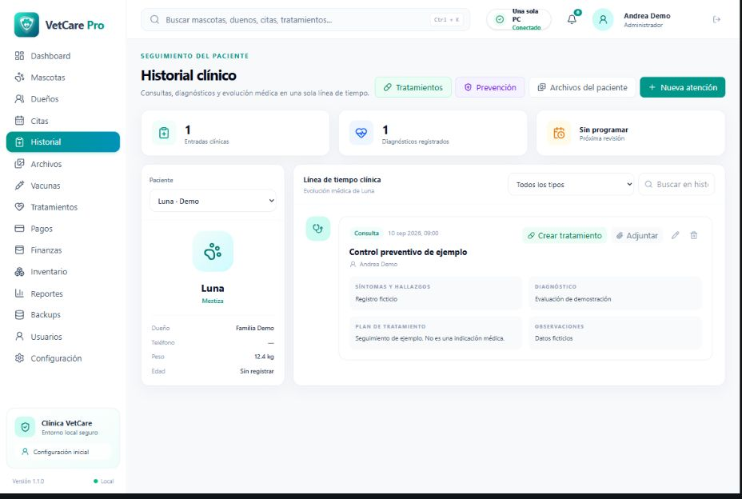
03 / Prepare an entry
A structured place for the next entry.
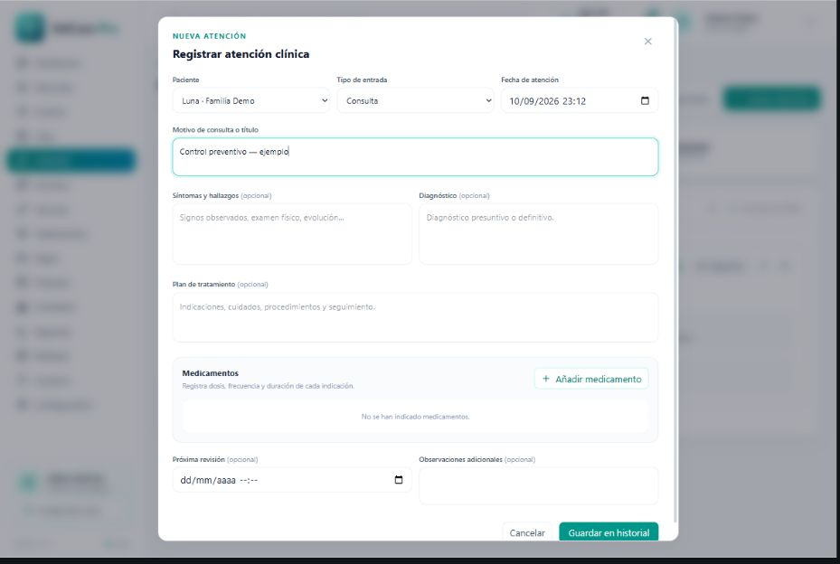
Alma Vet
01 / Meet the clinic
A clear introduction to the clinic.
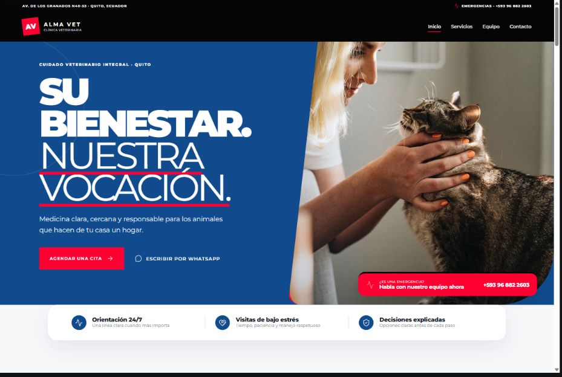
02 / Explore services
Find the right starting point for care.
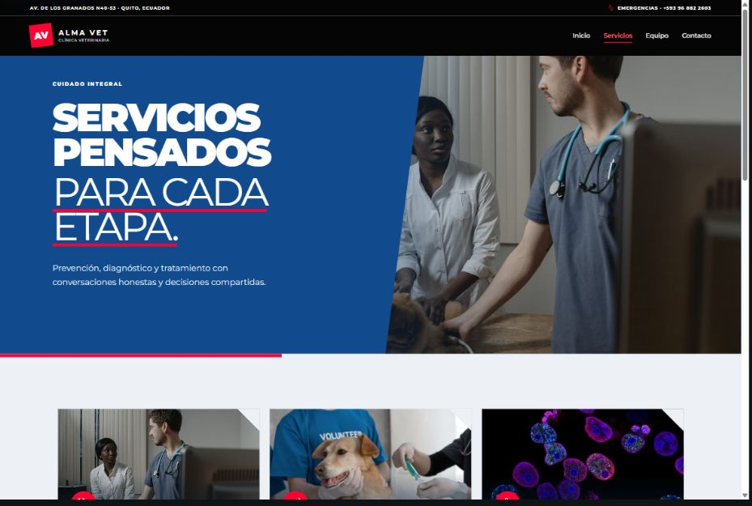
03 / Prepare a request
Request a visit; the clinic confirms it.
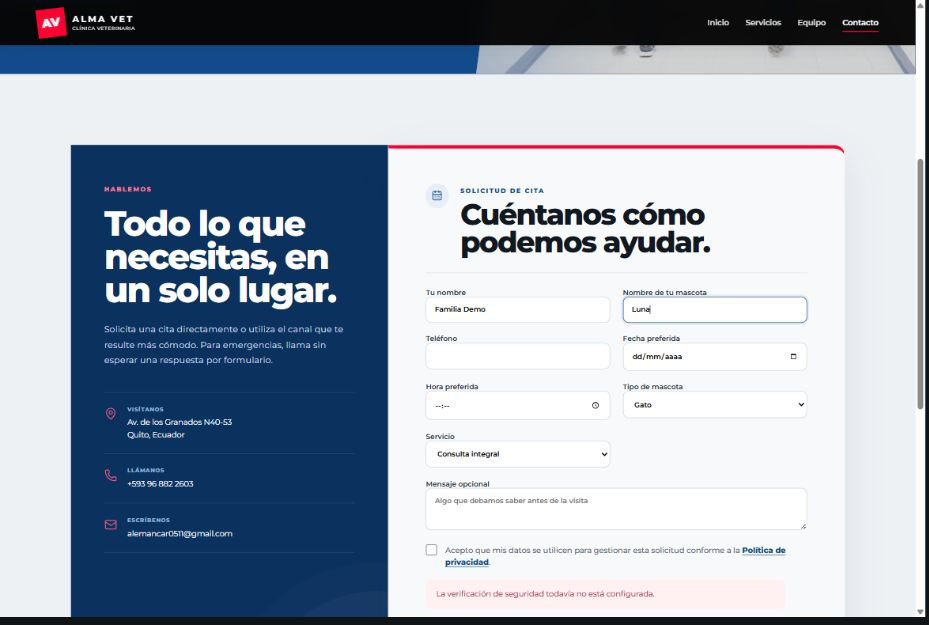
Casa Nativa
01 / Feel the space
An editorial introduction to the store.
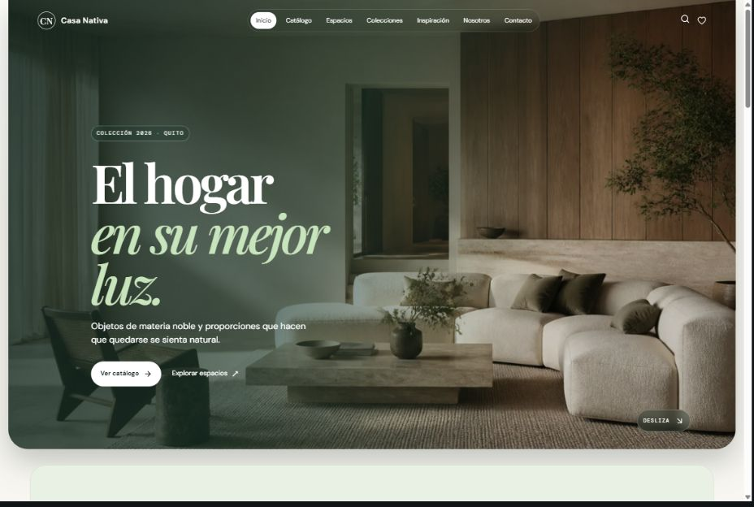
02 / Explore the catalog
Browse pieces, categories, and prices.
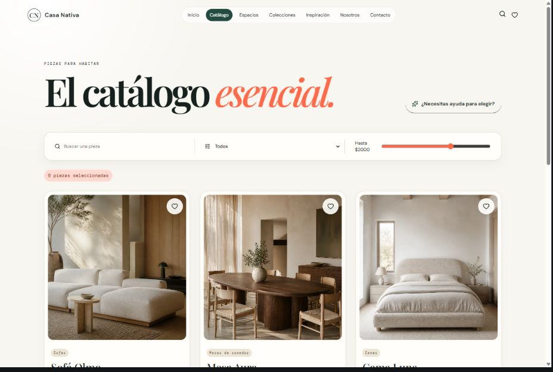
03 / Inspect a piece
Materials, dimensions, and color choices.
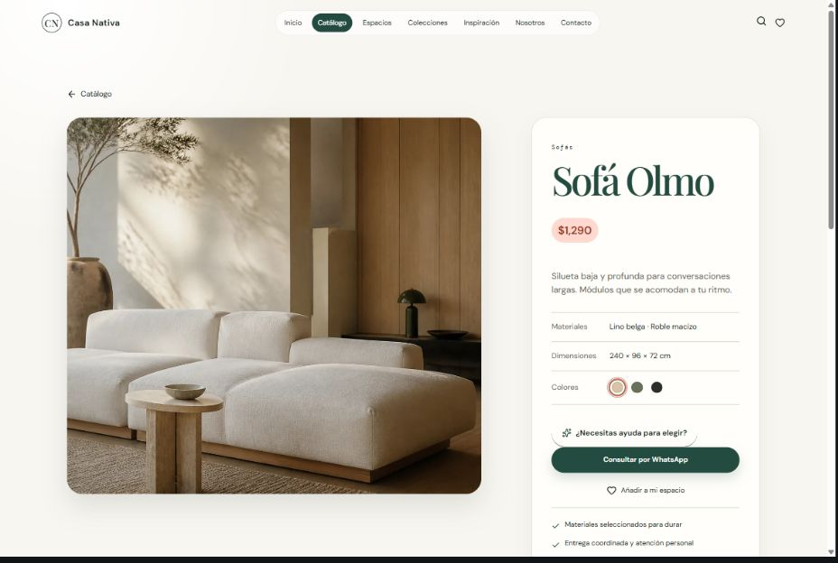
04 / Save a selection
Build a selection before an inquiry.
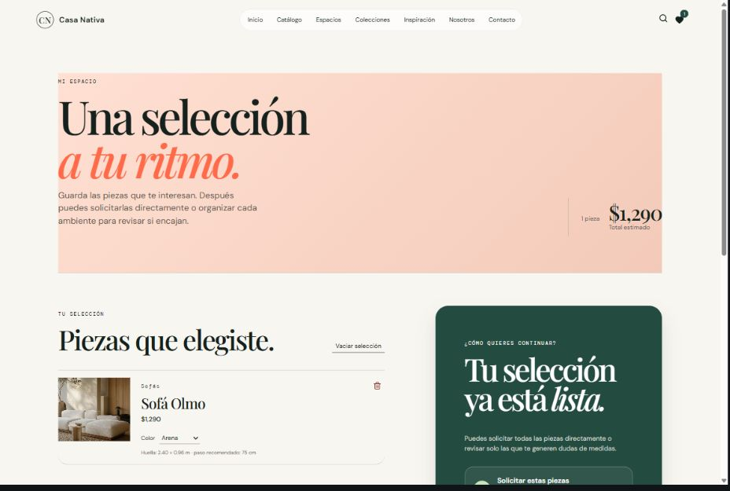